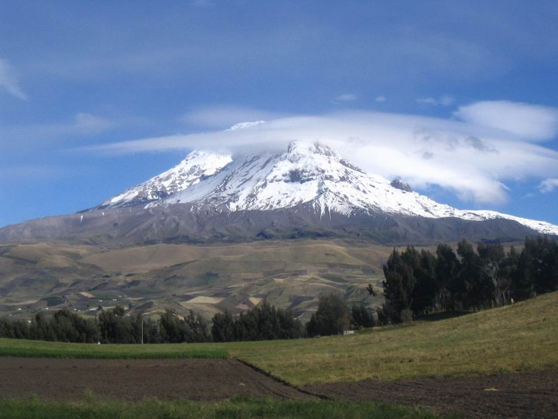

Nuestras Regiones
Costa
También denominada como región Litoral o simplemente como la Costa. Se encuentra situada entre la cordillera de los Andes y el Océano Pacífico.
Ver Región

Sierra
La región Interandina o Sierra se extiende de norte a sur por los Andes. su altura se encuentra entre los 1.800 mts o menor, hasta los 6.268 mts. con el Chimborazo.
Ver Región
Oriente
La región Amazónica de Ecuador, conocida también como Amazonía u Oriente, conformada por un área aproximada de 120.000 km² de la Amazonia.
Ver RegiónGalápagos
Las Islas Galápagos o el Archipiélago de Colón, localizado a 972 kilómetros al oeste de la costa ecuatoriana. También se le denomina región Insular.
Ver Región